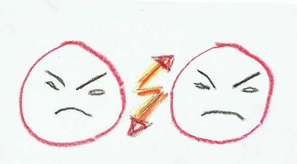

Was sind Konflikte?
Konflikte sind alltägliche Ereignisse und gehören zu unserem Leben. Wir finden sie überall dort, wo Menschen privat zusammen sind oder miteinander arbeiten. Sie weisen auf Probleme hin und damit haben wir die Chance, Missstände aufzudecken.
Die Frage ist, wie wir mit Konflikten umgehen...
Wenn ein Konflikt unangesprochen oder ungelöst bleibt, steigt die Wahrscheinlichkeit einer Eskalation. Diese Eskalation durchläuft verschiedene Stufen bis keine Verständigung mehr möglich ist.
Mediation bietet sich an, wenn Jemand das Gefühl hat, er steckt in
seinem Konflikt fest.
Mediation ist ein klar strukturiertes Verfahren zur
Konfliktlösung.
Mediation hat sich auch bei hoch strittigen Konfrontationen
bewährt.
Mediation ist eine hilfreiche Methode, um mit Kompetenz und
zum Nutzen aller Beteiligten eine tragfähige, eigenverantwortliche
Lösung zu finden.
Mediation bietet den Rahmen, alle Interessen bestmöglich zu
berücksichtigen.
Es gibt auch innere Fragen, die den Einzelnen belasten können und mit denen man sich herumschlägt: Berufssituation, Partnerschaft, Krankheit, Renteneintritt, Burnout und vieles mehr....
